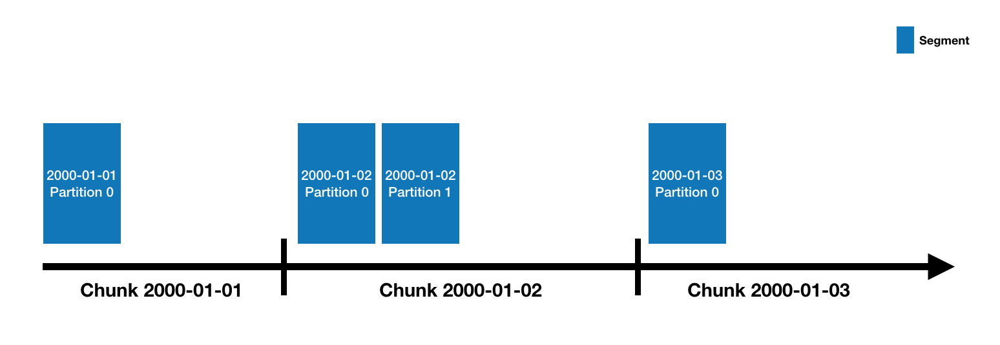

Druid has a multi-process, distributed architecture that is designed to be cloud-friendly and easy to operate. Each Druid process type can be configured and scaled independently, giving you maximum flexibility over your cluster. This design also provides enhanced fault tolerance: an outage of one component will not immediately affect other components.
1.1. Processes and Servers
Druid has several process types, briefly described below:
- Coordinator processes manage data availability on the cluster.
- Overlord processes control the assignment of data ingestion workloads.
- Broker processes handle queries from external clients.
- Router processes are optional processes that can route requests to Brokers, Coordinators, and Overlords.
- Historical processes store queryable data.
- MiddleManager processes are responsible for ingesting data.
Druid processes can be deployed any way you like, but for ease of deployment we suggest organizing them into three server types: Master, Query, and Data.
- Master: Runs Coordinator and Overlord processes, manages data availability and ingestion.
- Query: Runs Broker and optional Router processes, handles queries from external clients.
- Data: Runs Historical and MiddleManager processes, executes ingestion workloads and stores all queryable data.
For more details on process and server organization, please see Druid Processes and Servers.
1.2. External dependencies
In addition to its built-in process types, Druid also has three external dependencies. These are intended to be able to leverage existing infrastructure, where present.
1.2.1. Deep storage
Shared file storage accessible by every Druid server. In a clustered deployment, this is typically going to be a distributed object store like S3 or HDFS, or a network mounted filesystem. In a single-server deployment, this is typically going to be local disk. Druid uses deep storage to store any data that has been ingested into the system.
Druid uses deep storage only as a backup of your data and as a way to transfer data in the background between Druid processes. To respond to queries, Historical processes do not read from deep storage, but instead read prefetched segments from their local disks before any queries are served. This means that Druid never needs to access deep storage during a query, helping it offer the best query latencies possible. It also means that you must have enough disk space both in deep storage and across your Historical processes for the data you plan to load.
Deep storage is an important part of Druid's elastic, fault-tolerant design. Druid can bootstrap from deep storage even if every single data server is lost and re-provisioned.
For more details, please see the Deep storage page.
1.2.2. Metadata storage
The metadata storage holds various shared system metadata such as segment usage information and task information. In a clustered deployment, this is typically going to be a traditional RDBMS like PostgreSQL or MySQL. In a single-server deployment, it is typically going to be a locally-stored Apache Derby database.
For more details, please see the Metadata storage page.
1.2.3. ZooKeeper
Used for internal service discovery, coordination, and leader election.
For more details, please see the ZooKeeper page.
1.3. Architecture diagram
The following diagram shows how queries and data flow through this architecture, using the suggested Master/Query/Data server organization:

1.4. Storage design
1.4.1. Datasources and segments
Druid data is stored in "datasources", which are similar to tables in a traditional RDBMS. Each datasource is partitioned by time and, optionally, further partitioned by other attributes. Each time range is called a "chunk" (for example, a single day, if your datasource is partitioned by day). Within a chunk, data is partitioned into one or more "segments". Each segment is a single file, typically comprising up to a few million rows of data. Since segments are organized into time chunks, it's sometimes helpful to think of segments as living on a timeline like the following:

A datasource may have anywhere from just a few segments, up to hundreds of thousands and even millions of segments. Each segment starts life off being created on a MiddleManager, and at that point, is mutable and uncommitted. The segment building process includes the following steps, designed to produce a data file that is compact and supports fast queries:
- Conversion to columnar format
- Indexing with bitmap indexes
- Compression using various algorithms
- Dictionary encoding with id storage minimization for String columns
- Bitmap compression for bitmap indexes
- Type-aware compression for all columns
Periodically, segments are committed and published. At this point, they are written to deep storage, become immutable, and move from MiddleManagers to the Historical processes. An entry about the segment is also written to the metadata store. This entry is a self-describing bit of metadata about the segment, including things like the schema of the segment, its size, and its location on deep storage. These entries are what the Coordinator uses to know what data should be available on the cluster.
For details on the segment file format, please see segment files.
For details on modeling your data in Druid, see schema design.
1.4.2. Indexing and handoff
Indexing is the mechanism by which new segments are created, and handoff is the mechanism by which they are published and begin being served by Historical processes. The mechanism works like this on the indexing side:
- An indexing task starts running and building a new segment. It must determine the identifier of the segment before it starts building it. For a task that is appending (like a Kafka task, or an index task in append mode) this will be done by calling an "allocate" API on the Overlord to potentially add a new partition to an existing set of segments. For a task that is overwriting (like a Hadoop task, or an index task not in append mode) this is done by locking an interval and creating a new version number and new set of segments.
- If the indexing task is a realtime task (like a Kafka task) then the segment is immediately queryable at this point. It's available, but unpublished.
- When the indexing task has finished reading data for the segment, it pushes it to deep storage and then publishes it by writing a record into the metadata store.
- If the indexing task is a realtime task, at this point it waits for a Historical process to load the segment. If the indexing task is not a realtime task, it exits immediately.
And like this on the Coordinator / Historical side:
- The Coordinator polls the metadata store periodically (by default, every 1 minute) for newly published segments.
- When the Coordinator finds a segment that is published and used, but unavailable, it chooses a Historical process to load that segment and instructs that Historical to do so.
- The Historical loads the segment and begins serving it.
- At this point, if the indexing task was waiting for handoff, it will exit.
1.4.3. Segment identifiers
Segments all have a four-part identifier with the following components:
- Datasource name.
- Time interval (for the time chunk containing the segment; this corresponds to the
segmentGranularityspecified at ingestion time). - Version number (generally an ISO8601 timestamp corresponding to when the segment set was first started).
- Partition number (an integer, unique within a datasource+interval+version; may not necessarily be contiguous).
For example, this is the identifier for a segment in datasource clarity-cloud0, time chunk
2018-05-21T16:00:00.000Z/2018-05-21T17:00:00.000Z, version 2018-05-21T15:56:09.909Z, and partition number 1:
clarity-cloud0_2018-05-21T16:00:00.000Z_2018-05-21T17:00:00.000Z_2018-05-21T15:56:09.909Z_1
Segments with partition number 0 (the first partition in a chunk) omit the partition number, like the following example, which is a segment in the same time chunk as the previous one, but with partition number 0 instead of 1:
clarity-cloud0_2018-05-21T16:00:00.000Z_2018-05-21T17:00:00.000Z_2018-05-21T15:56:09.909Z
1.4.4. Segment versioning
You may be wondering what the "version number" described in the previous section is for. Or, you might not be, in which case good for you and you can skip this section!
It's there to support batch-mode overwriting. In Druid, if all you ever do is append data, then there will be just a single version for each time chunk. But when you overwrite data, what happens behind the scenes is that a new set of segments is created with the same datasource, same time interval, but a higher version number. This is a signal to the rest of the Druid system that the older version should be removed from the cluster, and the new version should replace it.
The switch appears to happen instantaneously to a user, because Druid handles this by first loading the new data (but not allowing it to be queried), and then, as soon as the new data is all loaded, switching all new queries to use those new segments. Then it drops the old segments a few minutes later.
1.4.5. Segment lifecycle
Each segment has a lifecycle that involves the following three major areas:
- Metadata store: Segment metadata (a small JSON payload generally no more than a few KB) is stored in the
metadata store once a segment is done being constructed. The act of inserting
a record for a segment into the metadata store is called publishing. These metadata records have a boolean flag
named
used, which controls whether the segment is intended to be queryable or not. Segments created by realtime tasks will be available before they are published, since they are only published when the segment is complete and will not accept any additional rows of data. - Deep storage: Segment data files are pushed to deep storage once a segment is done being constructed. This happens immediately before publishing metadata to the metadata store.
- Availability for querying: Segments are available for querying on some Druid data server, like a realtime task or a Historical process.
You can inspect the state of currently active segments using the Druid SQL
sys.segments table. It includes the following flags:
is_published: True if segment metadata has been published to the metadata store andusedis true.is_available: True if the segment is currently available for querying, either on a realtime task or Historical process.is_realtime: True if the segment is only available on realtime tasks. For datasources that use realtime ingestion, this will generally start offtrueand then becomefalseas the segment is published and handed off.is_overshadowed: True if the segment is published (withusedset to true) and is fully overshadowed by some other published segments. Generally this is a transient state, and segments in this state will soon have theirusedflag automatically set to false.
1.4.6. Availability and consistency
Druid has an architectural separation between ingestion and querying, as described above in Indexing and handoff. This means that when understanding Druid's availability and consistency properties, we must look at each function separately.
On the ingestion side, Druid's primary ingestion methods are all pull-based and offer transactional guarantees. This means that you are guaranteed that ingestion using these will publish in an all-or-nothing manner:
- Supervised "seekable-stream" ingestion methods like Kafka and Kinesis. With these methods, Druid commits stream offsets to its metadata store alongside segment metadata, in the same transaction. Note that ingestion of data that has not yet been published can be rolled back if ingestion tasks fail. In this case, partially-ingested data is discarded, and Druid will resume ingestion from the last committed set of stream offsets. This ensures exactly-once publishing behavior.
- Hadoop-based batch ingestion. Each task publishes all segment metadata in a single transaction.
- Native batch ingestion. In parallel mode, the supervisor task publishes all segment metadata in a single transaction after the subtasks are finished. In simple (single-task) mode, the single task publishes all segment metadata in a single transaction after it is complete.
Tranquility, a streaming ingestion method that is no longer recommended, does not perform transactional loading.
Additionally, some ingestion methods offer an idempotency guarantee. This means that repeated executions of the same ingestion will not cause duplicate data to be ingested:
- Supervised "seekable-stream" ingestion methods like Kafka and Kinesis are idempotent due to the fact that stream offsets and segment metadata are stored together and updated in lock-step.
- Hadoop-based batch ingestion is idempotent unless one of your input sources is the same Druid datasource that you are ingesting into. In this case, running the same task twice is non-idempotent, because you are adding to existing data instead of overwriting it.
- Native batch ingestion is idempotent unless
appendToExistingis true, or one of your input sources is the same Druid datasource that you are ingesting into. In either of these two cases, running the same task twice is non-idempotent, because you are adding to existing data instead of overwriting it.
On the query side, the Druid Broker is responsible for ensuring that a consistent set of segments is involved in a
given query. It selects the appropriate set of segments to use when the query starts based on what is currently
available. This is supported by atomic replacement, a feature that ensures that from a user's perspective, queries
flip instantaneously from an older set of data to a newer set of data, with no consistency or performance impact.
This is used for Hadoop-based batch ingestion, native batch ingestion when appendToExisting is false, and compaction.
Note that atomic replacement happens for each time chunk individually. If a batch ingestion task or compaction involves multiple time chunks, then each time chunk will undergo atomic replacement soon after the task finishes, but the replacements will not all happen simultaneously.
Typically, atomic replacement in Druid is based on a core set concept that works in conjunction with segment versions. When a time chunk is overwritten, a new core set of segments is created with a higher version number. The core set must all be available before the Broker will use them instead of the older set. There can also only be one core set per version per time chunk. Druid will also only use a single version at a time per time chunk. Together, these properties provide Druid's atomic replacement guarantees.
Druid also supports an experimental segment locking mode that is activated by setting
forceTimeChunkLock to false in the context of an ingestion task. In this case, Druid
creates an atomic update group using the existing version for the time chunk, instead of creating a new core set
with a new version number. There can be multiple atomic update groups with the same version number per time chunk. Each
one replaces a specific set of earlier segments in the same time chunk and with the same version number. Druid will
query the latest one that is fully available. This is a more powerful version of the core set concept, because it
enables atomically replacing a subset of data for a time chunk, as well as doing atomic replacement and appending
simultaneously.
If segments become unavailable due to multiple Historicals going offline simultaneously (beyond your replication factor), then Druid queries will include only the segments that are still available. In the background, Druid will reload these unavailable segments on other Historicals as quickly as possible, at which point they will be included in queries again.
1.5. Query processing
Queries first enter the Broker, where the Broker will identify which segments have data that may pertain to that query. The list of segments is always pruned by time, and may also be pruned by other attributes depending on how your datasource is partitioned. The Broker will then identify which Historicals and MiddleManagers are serving those segments and send a rewritten subquery to each of those processes. The Historical/MiddleManager processes will take in the queries, process them and return results. The Broker receives results and merges them together to get the final answer, which it returns to the original caller.
Broker pruning is an important way that Druid limits the amount of data that must be scanned for each query, but it is not the only way. For filters at a more granular level than what the Broker can use for pruning, indexing structures inside each segment allow Druid to figure out which (if any) rows match the filter set before looking at any row of data. Once Druid knows which rows match a particular query, it only accesses the specific columns it needs for that query. Within those columns, Druid can skip from row to row, avoiding reading data that doesn't match the query filter.
So Druid uses three different techniques to maximize query performance:
- Pruning which segments are accessed for each query.
- Within each segment, using indexes to identify which rows must be accessed.
- Within each segment, only reading the specific rows and columns that are relevant to a particular query.
For more details about how Druid executes queries, refer to the Query execution documentation.